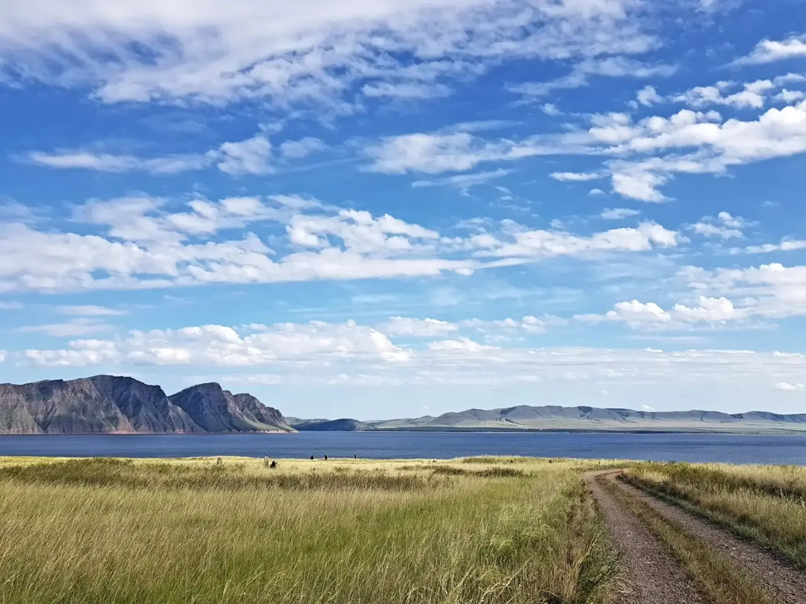
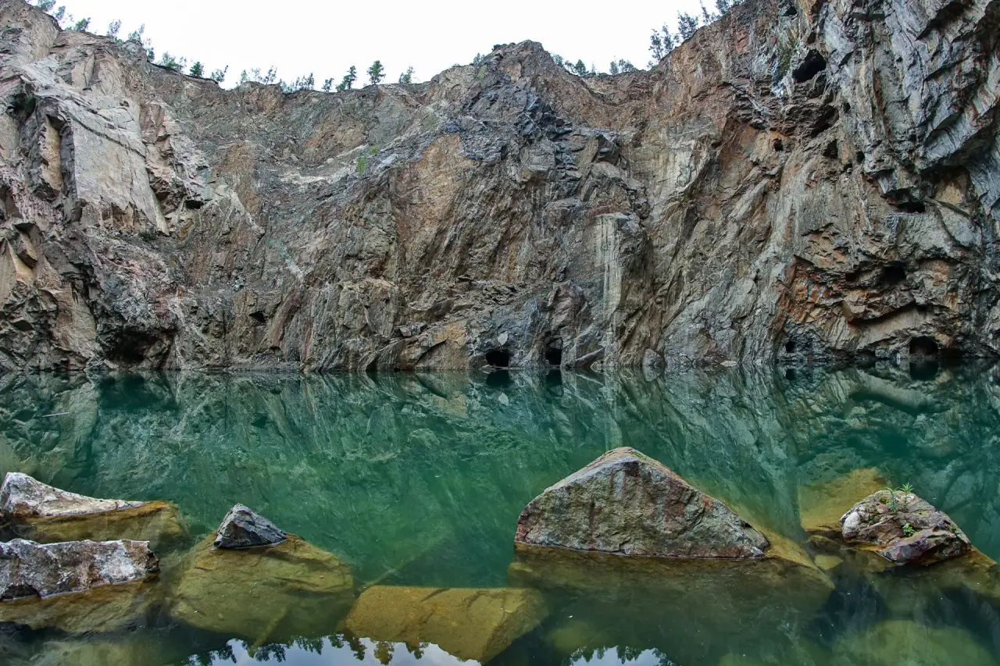
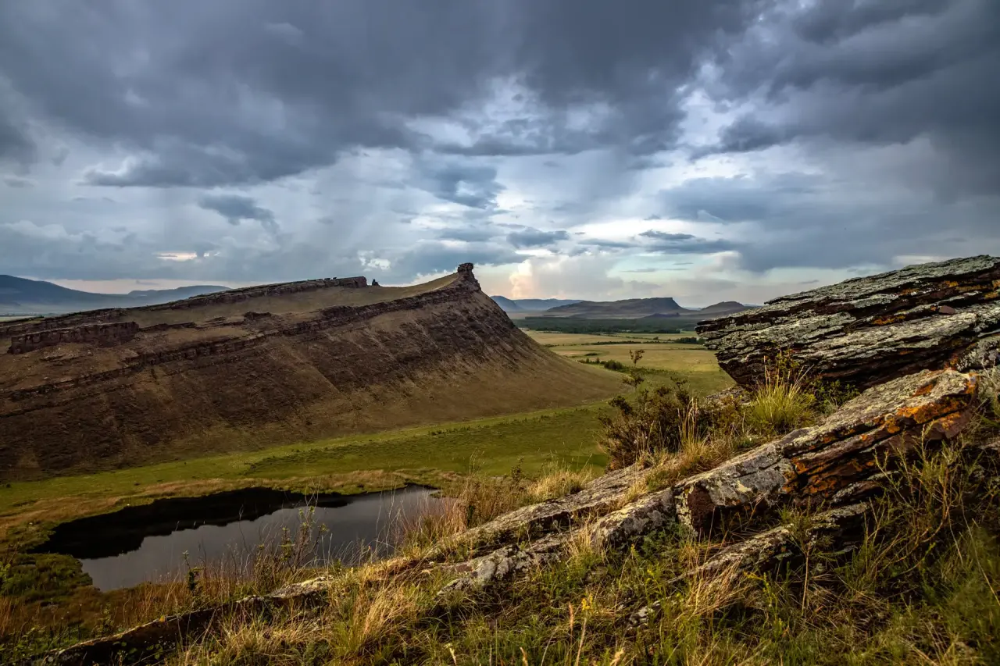
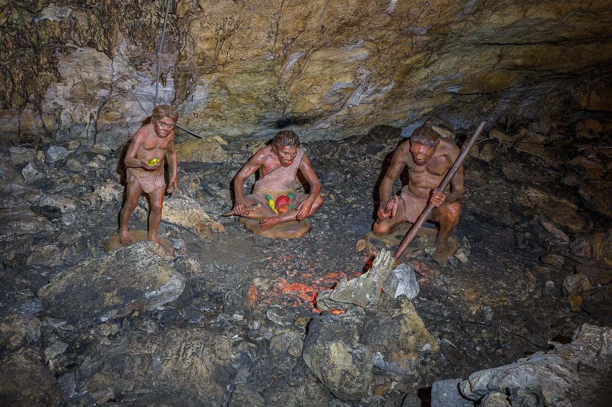
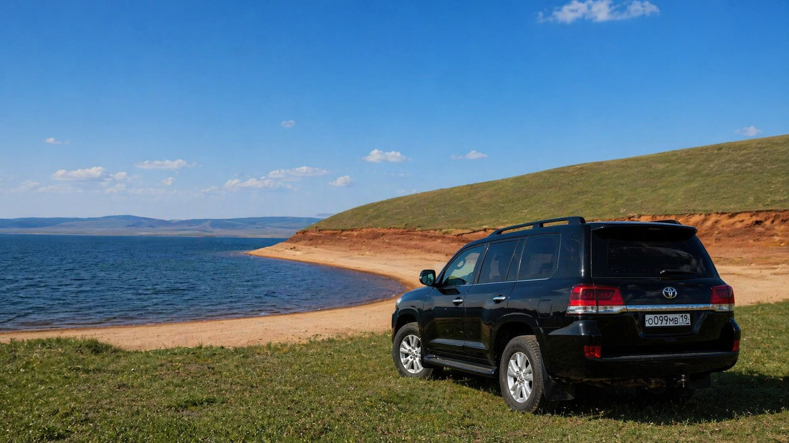
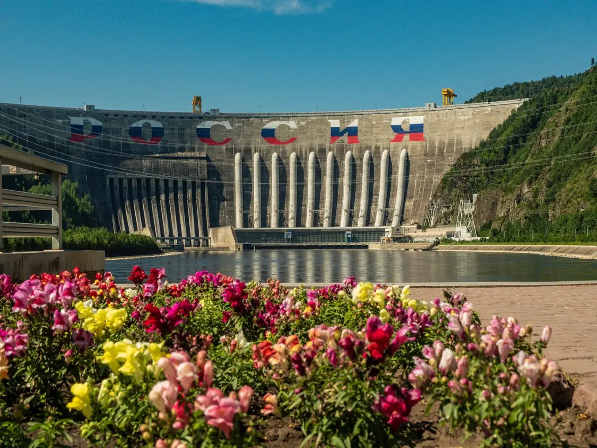
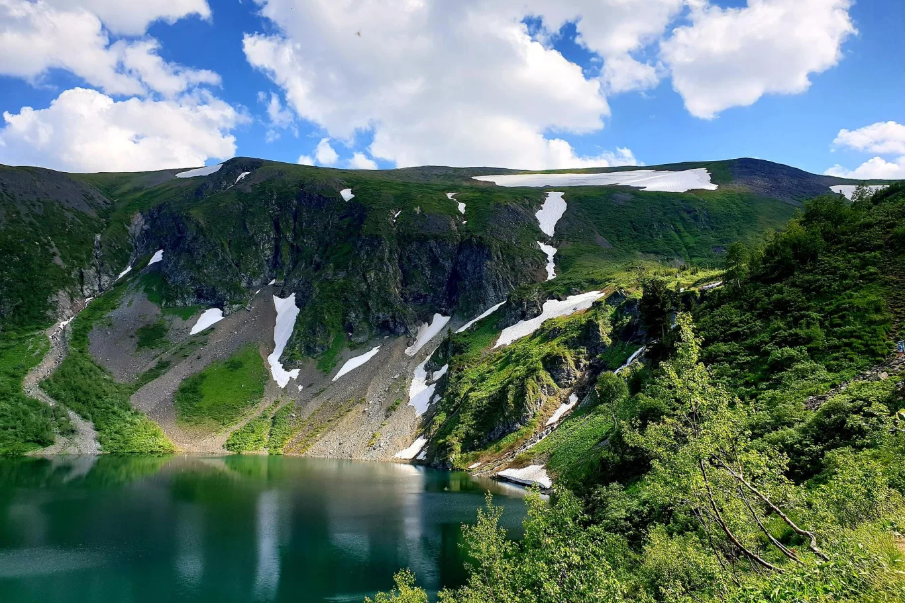
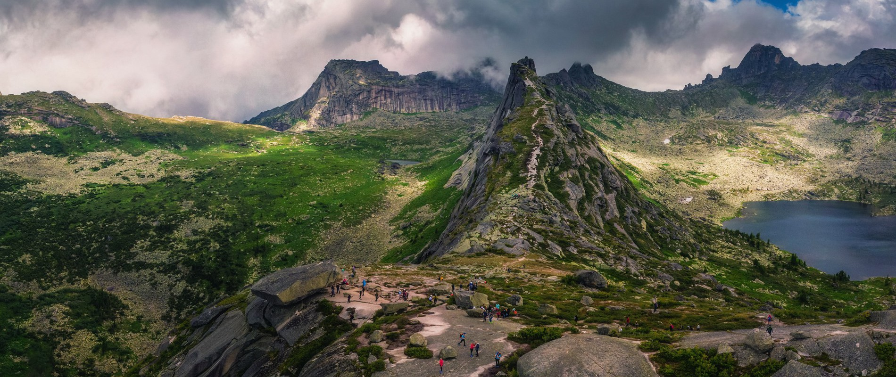

Ширинские озёра
Отличный вариант для поездки на выходные: озёра, степные виды и отдых в дороге без спешки.
Построить маршрутТвоё Путешествие
Подбирайте направления, продумывайте маршрут и выбирайте автомобиль для поездок по Хакасии, Абакану и за пределами региона.
RioCar — это не только аренда автомобилей в Абакане, но и удобный способ заранее продумать поездку. Мы объединяем подбор автомобиля и идеи маршрутов, чтобы путешествие начиналось не с хаоса, а с понятного плана.
Эта страница — часть будущего приложения для ваших путешествий, где можно будет выбрать направление, посмотреть ключевые точки маршрута и подобрать машину под формат поездки.
Идеи для поездок по Хакасии и маршрутов, которые удобно проходить на автомобиле.

Отличный вариант для поездки на выходные: озёра, степные виды и отдых в дороге без спешки.
Построить маршрут
Одна из самых узнаваемых точек Хакасии для самостоятельного маршрута на автомобиле.
Построить маршрут
Исторические места, красивые виды и спокойный маршрут для размеренного путешествия.
Построить маршрутгорный регион с дикой природой, перевалами и панорамными видами, где дорога сама становится частью приключения.
Построить маршрут
уникальная карстовая пещера с подземными залами и кристаллами, идеально подходит для необычного и атмосферного путешествия.
Построить маршрут
огромная водная гладь с живописными берегами и закатами, создающая ощущение настоящего «сибирского моря».
Построить маршрут
Впечатляющее направление для тех, кто хочет увидеть масштабные природные и инженерные локации.
Построить маршрут
Более насыщенный маршрут для тех, кто хочет совместить дорогу, природу и яркие впечатления.
Построить маршрут
Горные пейзажи и ощущение настоящей дороги — для тех, кто любит маршрут с характером.
Построить маршрутГоры, озёра или что-то дикое и атмосферное — выберите место, куда реально хочется поехать.
Отметьте ключевые точки, дорогу и время в пути, чтобы поездка прошла без суеты.
Подберите машину под свою задачу — город, трасса, компания или дальний трип.
Бронируйте авто и отправляйтесь в путь — маршрут уже продуман, осталось только ехать.
Выберите маршрут, подберите автомобиль и отправляйтесь в поездку по Хакасии с комфортом.